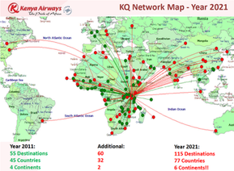
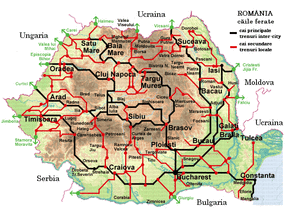
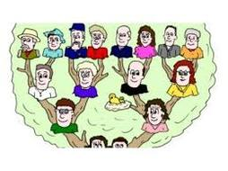

Cablurile de înaltă tensiune care pornesc dintr-o centrală pot fi și ele reprezentate
cu ușurință cu ajutorul unui graf orientat, indicând și direcția de deplasare a curentului.
În acest caz centrala este un nod sursă. La fel se poate reprezenta și un sistem de canalizare,
de încălzire sau rețeaua de apă curentă.
Multitudinea căilor aeriene reprezintă grafuri. Nodurile sunt intersecțiile (imaginare)
și muchiile sunt rutele (imaginare). Noduri pot fi și aeroporturile.
Cel mai bun exemplu de aplicație practică în viață reală a grafurilor neorientate
sunt hărțile rutiere. Putem afla astfel cel mai scurt drum până într-un anumit punct
sau care puncte de pe hartă sunt cel mai ușor accesibile.
Nodurile pot fi considerate orașe, iar muchiile drumuri; grafurile orientate pot
reprezenta drumuri cu sens unic între clădiri. De asemenea, ne putem reprezenta
traiectoria unei călătorii cu ajutorul unui lanț al unui graf neorientat.
Teoria grafurilor are numeroase apeluri în chimie, contribuind în mare măsură la
rezolvarea problemelor de numărare a grafurilor aparținând unor clase speciale. Teoria grafurilor
este folosită în domenii variate: de la chimie la economie, de la studiul
rețelelor electrice la critică textelor de politică, devenind o disciplină majoră.
Grafurile mai pot arăta legăturile dintre anuminte grupuri sau oameni; grafuri orientate
pot arăta transferul de informații sau a unor bunuri.Un arbore genealogic este de
asemena un graf neorientat.
